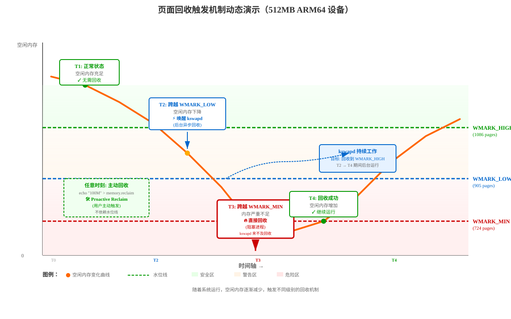

基于 Linux 6.18.1 内核源码 (mm/vmscan.c,mm/page_alloc.c,mm/workingset.c,mm/shrinker.c)，
重点分析 ARM64 架构下页面回收的完整流程，并讨论嵌入式设备（512MB/1GB）场景下的回收行为。
Linux 页面回收有三条主要路径：
┌─────────────────────────────────────────────────────────────────┐
│ 页面回收触发路径 │
├─────────────────────────────────────────────────────────────────┤
│ │
│ ① 直接回收 (Direct Reclaim) │
│ alloc_pages() → __alloc_pages_slowpath() │
│ → __perform_reclaim() → try_to_free_pages() │
│ → do_try_to_free_pages() → shrink_zones() │
│ │
│ ② 后台回收 (kswapd) │
│ kswapd 内核线程 → balance_pgdat() │
│ → kswapd_shrink_node() → shrink_node() │
│ │
│ ③ 主动回收 (Proactive Reclaim) │
│ memory.reclaim cgroup 接口 │
│ → try_to_free_mem_cgroup_pages() │
│ │
│ 共同路径: │
│ shrink_node() → shrink_lruvec() → shrink_list() │
│ → shrink_inactive_list() → shrink_folio_list() │
│ │
│ MGLRU 路径（如果启用）: │
│ shrink_node() → lru_gen_shrink_node() │
│ → try_to_shrink_lruvec() → evict_folios() │
│ → shrink_folio_list() │
│ │
└─────────────────────────────────────────────────────────────────┘① 直接回收 (Direct Reclaim) 触发条件：
进程通过 alloc_pages() 分配内存时，满足以下条件会触发直接回收：
// 判断逻辑（mm/page_alloc.c）
if (zone_free_pages < WMARK_MIN) {
// 触发直接回收
__perform_reclaim(gfp_mask, order, zonelist, nodemask);
}__alloc_pages_slowpath()DEF_PRIORITY=12 逐步降到 0（越来越激进）SWAP_CLUSTER_MAX) 或满足分配需求② 后台回收 (kswapd) 触发条件：
kswapd 内核线程在以下条件下被唤醒：
// 判断逻辑（mm/vmscan.c:wakeup_kswapd）
void wakeup_kswapd(struct zone *zone, gfp_t gfp_flags, int order,
enum zone_type highest_zoneidx)
{
// 检查是否需要唤醒
if (!pgdat_balanced(pgdat, order, highest_zoneidx)) {
// zone 空闲页 < WMARK_LOW 时返回 false
wake_up_interruptible(&pgdat->kswapd_wait);
}
}wakeup_kswapd()pgdat_balanced() 检查，达到 high watermark 后休眠③ 主动回收 (Proactive Reclaim) 触发条件：
用户态主动触发的回收，通过 cgroup v2 接口：
# 触发方式
echo "100M" > /sys/fs/cgroup/xxx/memory.reclaim// 内核处理逻辑（mm/memcontrol.c）
static ssize_t memory_reclaim(struct kernfs_open_file *of, char *buf,
size_t nbytes, loff_t off)
{
// 解析用户指定的回收量
err = page_counter_memparse(buf, "", &nr_to_reclaim);
// 触发回收
reclaimed = try_to_free_mem_cgroup_pages(memcg, nr_to_reclaim,
GFP_KERNEL, ...);
}memory.reclaim 接口📋 阅读提示：下表使用颜色标注区分不同回收路径的特征：
- 🔴 红色背景/文字：直接回收（紧急、阻塞、影响用户体验）
- 🔵 蓝色背景/文字：后台回收（温和、异步、用户无感知）
- 🟢 绿色背景/文字：主动回收（用户/管理员主动控制）
| 回收路径 | 触发条件 | 同步/异步 | 回收目标 | 优先级范围 | 典型场景 |
|---|---|---|---|---|---|
| 直接回收 (Direct Reclaim) | 空闲页 < WMARK_MIN | 同步（阻塞） | 32 页或满足分配 | 12 → 0 （最激进） | 内存紧急不足 |
| 后台回收 (kswapd) | 空闲页 < WMARK_LOW | 异步（后台） | 达到 WMARK_HIGH | 12 → 1 （较温和） | 内存压力预防 |
| 主动回收 (Proactive Reclaim) | 用户写 memory.reclaim | 同步（阻塞） | 用户指定量 | 12 → 0 （可调） | 主动内存管理 |
颜色说明：
水位线示例（512MB ARM64 设备，单 ZONE_NORMAL）：
物理内存: 512MB
min_free_kbytes ≈ 2896 KB (根据公式 sqrt(lowmem_kbytes * 16) 计算)水位线层次关系可视化：
触发判断流程图：
alloc_pages() 分配内存
↓
检查快速路径（per-cpu 页缓存）
↓
失败 → 检查空闲页 vs 水位线
↓三种回收方式动态触发示意图：

动态过程解读：
| 时刻 | 空闲内存状态 | 触发的回收 | 特征 |
|---|---|---|---|
| T1 | ≥ WMARK_HIGH （充足） | ✓ 无回收 | 正常运行，kswapd 休眠 |
| T2 | WMARK_LOW ~ WMARK_HIGH （下降） | ⚡ kswapd 唤醒 | 后台异步回收，用户无感知 |
| T3 | < WMARK_MIN （告急） | 🔥 直接回收 | 同步阻塞，进程卡顿 |
| T4 | → WMARK_HIGH （恢复） | ✓ 回收完成 | kswapd 休眠，系统恢复正常 |
| 任意时刻 | 不限 （独立） | 🛠️ 主动回收 | 用户触发，不依赖水位线 |
关键观察点：
scan_control 是贯穿整个回收过程的控制结构（mm/vmscan.c:75）：
struct scan_control {
unsigned long nr_to_reclaim; /* 目标回收页数 */
nodemask_t *nodemask; /* 允许的节点掩码 */
struct mem_cgroup *target_mem_cgroup; /* 目标 cgroup */
/* 匿名页/文件页回收压力平衡 */
unsigned long anon_cost;
unsigned long file_cost;
/* 回收能力标志 */
unsigned int may_writepage:1; /* 允许回写脏页 */
unsigned int may_unmap:1; /* 允许解除映射 */
unsigned int may_swap:1; /* 允许换出匿名页 */
/* 扫描控制 */
s8 order; /* 分配阶 */
s8 priority; /* 扫描优先级 (12→0, 越小越激进) */
s8 reclaim_idx; /* 最高回收 zone 索引 */
gfp_t gfp_mask; /* GFP 分配标志 */
/* 统计计数器 */
unsigned long nr_scanned; /* 已扫描页数 */
unsigned long nr_reclaimed; /* 已回收页数 */
};优先级机制：扫描量 = total_pages >> priority
DEF_PRIORITY = 12：最温和，仅扫描 1/4096 页面priority = 6：扫描 1/64 页面priority = 0：最激进，扫描全部页面每个 lruvec 维护以下 LRU 列表：
┌─────────────────────────────────────────────────┐
│ LRU Lists (per lruvec) │
├─────────────────────────────────────────────────┤
│ LRU_INACTIVE_ANON ← 不活跃匿名页 │
│ LRU_ACTIVE_ANON ← 活跃匿名页 │
│ LRU_INACTIVE_FILE ← 不活跃文件页 │
│ LRU_ACTIVE_FILE ← 活跃文件页 │
│ LRU_UNEVICTABLE ← 不可回收页 (mlock等) │
├─────────────────────────────────────────────────┤
│ MGLRU 模式下: │
│ lrugen.nr_pages[gen][type][zone] │
│ gen: 0 ~ MAX_NR_GENS-1 (4代) │
│ type: ANON / FILE │
│ zone: 按 zone 索引 │
└─────────────────────────────────────────────────┘水位线在内核中定义为枚举类型（include/linux/mmzone.h:708）：
enum zone_watermarks {
WMARK_MIN, // 最低水位线（索引 0）
WMARK_LOW, // 低水位线（索引 1）
WMARK_HIGH, // 高水位线（索引 2）
WMARK_PROMO, // 提升水位线（索引 3，NUMA promotion 使用）
NR_WMARK // 水位线总数（4）
};每个 zone 在 struct zone 中存储水位线的实际页数（include/linux/mmzone.h:882-884）：
struct zone {
/* zone watermarks, access with *_wmark_pages(zone) macros */
unsigned long _watermark[NR_WMARK]; // 存储所有水位线的页数
unsigned long watermark_boost; // 动态调整值（碎片防护）
...
};访问方法（include/linux/mmzone.h:1082-1095）：
// 通用访问函数（加上 watermark_boost）
static inline unsigned long wmark_pages(const struct zone *z,
enum zone_watermarks w)
{
return z->_watermark[w] + z->watermark_boost;
}
// 获取 WMARK_MIN
static inline unsigned long min_wmark_pages(const struct zone *z)
{
return wmark_pages(z, WMARK_MIN);
}
// 获取 WMARK_LOW
static inline unsigned long low_wmark_pages(const struct zone *z)
{
return wmark_pages(z, WMARK_LOW);
}
// 获取 WMARK_HIGH
static inline unsigned long high_wmark_pages(const struct zone *z)
{
return wmark_pages(z, WMARK_HIGH);
}实际访问值 = zone->_watermark[WMARK_XXX] + zone->watermark_boost
水位线的计算分为两个步骤，在系统启动时由 init_per_zone_wmark_min() 触发：
第一步：计算全局 min_free_kbytes（mm/page_alloc.c:6450）
void calculate_min_free_kbytes(void)
{
unsigned long lowmem_kbytes;
int new_min_free_kbytes;
// 1. 计算可用于缓冲区的内存（不包括 HIGHMEM 和 MOVABLE zone）
lowmem_kbytes = nr_free_buffer_pages() * (PAGE_SIZE >> 10);
// 2. 平方根公式：min_free_kbytes = sqrt(lowmem_kbytes * 16)
new_min_free_kbytes = int_sqrt(lowmem_kbytes * 16);
// 3. 检查用户是否自定义了 min_free_kbytes
if (new_min_free_kbytes > user_min_free_kbytes)
// 限制在 128KB ~ 262144KB (256MB) 之间
min_free_kbytes = clamp(new_min_free_kbytes, 128, 262144);
else
pr_warn("min_free_kbytes is not updated to %d because user defined value %d is preferred\n",
new_min_free_kbytes, user_min_free_kbytes);
}公式解析：
nr_free_buffer_pages() 返回所有非 HIGHMEM/MOVABLE zone 的总页数lowmem_kbytes * 16 = lowmem_kbytes << 4sqrt(x) 确保水位线随内存大小非线性增长（避免大内存系统保留过多）第二步：按 zone 比例分配水位线（mm/page_alloc.c:6338）
static void __setup_per_zone_wmarks(void)
{
unsigned long pages_min = min_free_kbytes >> (PAGE_SHIFT - 10); // KB 转页数
unsigned long lowmem_pages = 0;
struct zone *zone;
unsigned long flags;
// 1. 计算所有 lowmem zone 的总页数
for_each_zone(zone) {
if (!is_highmem(zone) && zone_idx(zone) != ZONE_MOVABLE)
lowmem_pages += zone_managed_pages(zone);
}
// 2. 为每个 zone 按比例分配
for_each_zone(zone) {
u64 tmp;
spin_lock_irqsave(&zone->lock, flags);
// 2.1 计算该 zone 应得的 WMARK_MIN 页数
tmp = (u64)pages_min * zone_managed_pages(zone);
tmp = div64_ul(tmp, lowmem_pages); // 按 zone 大小比例分配
if (is_highmem(zone) || zone_idx(zone) == ZONE_MOVABLE) {
// HIGHMEM/MOVABLE zone: 使用较小的固定值
// 原因: __GFP_HIGH 和 PF_MEMALLOC 分配通常不需要这些 zone
unsigned long min_pages;
min_pages = zone_managed_pages(zone) / 1024;
min_pages = clamp(min_pages, SWAP_CLUSTER_MAX, 128UL);
zone->_watermark[WMARK_MIN] = min_pages;
} else {
// LOWMEM zone (ZONE_NORMAL, ZONE_DMA32): 使用比例分配的值
zone->_watermark[WMARK_MIN] = tmp;
}
// 2.2 计算 delta（WMARK_LOW 和 WMARK_HIGH 之间的增量）
// delta 控制异步页面回收的行为
tmp = max_t(u64, tmp >> 2, // 至少是 WMARK_MIN 的 1/4
mult_frac(zone_managed_pages(zone),
watermark_scale_factor, 10000));
zone->watermark_boost = 0;
// 2.3 设置 WMARK_LOW 和 WMARK_HIGH
zone->_watermark[WMARK_LOW] = min_wmark_pages(zone) + tmp;
zone->_watermark[WMARK_HIGH] = low_wmark_pages(zone) + tmp;
zone->_watermark[WMARK_PROMO] = high_wmark_pages(zone) + tmp;
trace_mm_setup_per_zone_wmarks(zone);
spin_unlock_irqrestore(&zone->lock, flags);
}
// 更新总保留页数
calculate_totalreserve_pages();
}对于 lowmem zone（ZONE_NORMAL、ZONE_DMA32）：
步骤 1: 全局计算
lowmem_kbytes = 所有 lowmem zone 的总内存大小（KB）
min_free_kbytes = sqrt(lowmem_kbytes * 16)
限制范围: [128KB, 256MB]
步骤 2: 按 zone 比例分配
pages_min = min_free_kbytes / 4 (假设 4KB 页)
WMARK_MIN(zone) = pages_min * zone_managed_pages(zone) / total_lowmem_pages
delta = max(WMARK_MIN >> 2, // 至少 WMARK_MIN 的 25%
zone_managed_pages * watermark_scale_factor / 10000)
其中 watermark_scale_factor 默认值 = 10 (即 0.1%)
WMARK_LOW = WMARK_MIN + delta
WMARK_HIGH = WMARK_LOW + delta
WMARK_PROMO = WMARK_HIGH + delta三级水位线含义：
| 水位线 | 作用 | 触发行为 |
|---|---|---|
| WMARK_HIGH | 高水位 | kswapd 回收到此线停止 |
| WMARK_LOW | 低水位 | 快速路径分配阈值，低于此唤醒 kswapd |
| WMARK_MIN | 最低水位 | 低于此触发直接回收（同步阻塞） |
| < WMARK_MIN | 紧急 | 直接回收 + 可能触发 OOM Killer |
根据公式 min_free_kbytes = sqrt(lowmem_kbytes * 16)：
| 物理内存 | lowmem_kbytes | min_free_kbytes | WMARK_MIN (pages) | delta (pages) | WMARK_LOW | WMARK_HIGH |
|---|---|---|---|---|---|---|
| 512MB | ~524288 | ~2896 | ~724 | ~181 | ~905 | ~1086 |
| 1GB | ~1048576 | ~4096 | ~1024 | ~256 | ~1280 | ~1536 |
注: 以上为单 zone(ZONE_NORMAL) 简化计算，4KB 页面大小。
实际系统可能有 ZONE_DMA32 + ZONE_NORMAL 分配。
对于 ARM64 嵌入式设备的 zone 布局：
所以 512MB 设备的实际回收相关参数：
min_free_kbytes ≈ 2896 KB (约 724 个 4KB 页)
WMARK_MIN ≈ 724 pages (约 2.8 MB)
WMARK_LOW ≈ 905 pages (约 3.5 MB)
WMARK_HIGH ≈ 1086 pages (约 4.2 MB)详细计算过程（512MB 设备，单 ZONE_NORMAL）：
步骤 1: 全局计算
lowmem_kbytes = 524288 KB
min_free_kbytes = sqrt(524288 * 16) = sqrt(8388608) ≈ 2896 KB
步骤 2: 转换为页数
pages_min = 2896 KB / 4 KB = 724 pages
步骤 3: 按 zone 分配（假设只有一个 zone）
WMARK_MIN = 724 pages * zone_managed_pages / total_lowmem_pages
= 724 pages (单 zone 时 100% 分配)
步骤 4: 计算 delta
delta = max(WMARK_MIN >> 2, zone_managed_pages * 10 / 10000)
= max(724 >> 2, 131072 * 10 / 10000)
= max(181, 131)
= 181 pages
步骤 5: 计算其他水位线
WMARK_LOW = 724 + 181 = 905 pages (3.5 MB)
WMARK_HIGH = 905 + 181 = 1086 pages (4.2 MB)水位线可以在运行时通过 sysctl 接口动态调整：
查看和修改 min_free_kbytes：
# 查看当前值
cat /proc/sys/vm/min_free_kbytes
# 临时修改（会立即重新计算所有 zone 的水位线）
echo 4096 > /proc/sys/vm/min_free_kbytes
# 永久修改（写入 /etc/sysctl.conf）
echo "vm.min_free_kbytes = 4096" >> /etc/sysctl.conf
sysctl -p修改后的效果（mm/page_alloc.c:6490）：
static int min_free_kbytes_sysctl_handler(const struct ctl_table *table, int write,
void *buffer, size_t *length, loff_t *ppos)
{
int rc = proc_dointvec_minmax(table, write, buffer, length, ppos);
if (rc)
return rc;
if (write) {
user_min_free_kbytes = min_free_kbytes; // 标记为用户设置
setup_per_zone_wmarks(); // 重新计算所有水位线
}
return 0;
}调整 watermark_scale_factor（控制 delta 大小）：
# 查看当前值（默认 10 = 0.1%）
cat /proc/sys/vm/watermark_scale_factor
# 增大 delta（更早唤醒 kswapd，减少直接回收）
echo 50 > /proc/sys/vm/watermark_scale_factor # 0.5%
# 减小 delta（延迟 kswapd 唤醒，节省 CPU）
echo 5 > /proc/sys/vm/watermark_scale_factor # 0.05%watermark_scale_factor 的影响：
delta = max(WMARK_MIN >> 2, zone_managed_pages * scale_factor / 10000)
scale_factor = 10 (0.1%): 512MB 设备 delta ≈ 181 pages
scale_factor = 50 (0.5%): 512MB 设备 delta ≈ 655 pages (WMARK_LOW 更高)
scale_factor = 100 (1.0%): 512MB 设备 delta ≈ 1310 pages (更激进的后台回收)嵌入式设备（512MB/1GB）：
| 场景 | min_free_kbytes | watermark_scale_factor | 说明 |
|---|---|---|---|
| 默认 | 自动计算 (~2896) | 10 | 平衡性能与内存利用率 |
| 低内存压力 | 减小到 2048 | 5 | 提高内存利用率，适合后台任务少的设备 |
| 高内存压力 | 增大到 4096 | 20-50 | 更早触发回收，减少直接回收卡顿 |
| 实时系统 | 增大到 8192 | 50-100 | 避免直接回收导致的延迟峰值 |
调优原则：
# 查看所有 zone 的水位线（单位：页）
cat /proc/zoneinfo | grep -A 5 "pages free"
# 示例输出（512MB 设备）：
# min 724
# low 905
# high 1086
# spanned 131072
# present 131072
# managed 127856wakeup_kswapd() (mm/vmscan.c:7402) 在分配路径中被调用：
void wakeup_kswapd(struct zone *zone, gfp_t gfp_flags, int order,
enum zone_type highest_zoneidx)
{
pg_data_t *pgdat = zone->zone_pgdat;
// 若 kswapd 已失败多次，不再唤醒
if (atomic_read(&pgdat->kswapd_failures) >= MAX_RECLAIM_RETRIES)
return;
// 检查是否需要唤醒：zone 空闲页 < low watermark
if (pgdat_balanced(pgdat, order, highest_zoneidx))
return;
// 唤醒 kswapd 线程
wake_up_interruptible(&pgdat->kswapd_wait);
}唤醒条件：任一 zone 的空闲页数低于 low_wmark_pages(zone) 时触发。
当内存分配在慢速路径失败时，进入直接回收（mm/vmscan.c:6612）：
unsigned long try_to_free_pages(struct zonelist *zonelist, int order,
gfp_t gfp_mask, nodemask_t *nodemask)
{
struct scan_control sc = {
.nr_to_reclaim = SWAP_CLUSTER_MAX, // 目标回收 32 页
.gfp_mask = current_gfp_context(gfp_mask),
.order = order,
.priority = DEF_PRIORITY, // 从优先级 12 开始
.may_writepage = !laptop_mode,
.may_unmap = 1,
.may_swap = 1,
};
// 1. 检查是否需要节流（pfmemalloc 保护）
throttle_direct_reclaim(sc.gfp_mask);
// 2. 进入回收主循环
return do_try_to_free_pages(zonelist, &sc);
}do_try_to_free_pages 主循环：
static unsigned long do_try_to_free_pages(struct zonelist *zonelist,
struct scan_control *sc)
{
// 优先级从 DEF_PRIORITY(12) 递减到 0
do {
shrink_zones(zonelist, sc); // 扫描并回收
if (sc->nr_reclaimed >= sc->nr_to_reclaim)
break; // 达标退出
if (sc->compaction_ready)
break; // 可压缩退出
// 优先级降低后允许回写
if (sc->priority < DEF_PRIORITY - 2)
sc->may_writepage = 1;
} while (--sc->priority >= 0);
return sc->nr_reclaimed;
}kswapd 的核心循环在 balance_pgdat() (mm/vmscan.c:7015)：
static int balance_pgdat(pg_data_t *pgdat, int order, int highest_zoneidx)
{
struct scan_control sc = {
.gfp_mask = GFP_KERNEL,
.order = order,
.may_unmap = 1,
};
// 从 DEF_PRIORITY 开始逐步加压
sc.priority = DEF_PRIORITY;
do {
// 检查是否已平衡（所有 zone 都高于 high watermark）
if (pgdat_balanced(pgdat, sc.order, highest_zoneidx))
break;
// 设置回收能力
sc.may_writepage = !laptop_mode && sc.priority < DEF_PRIORITY - 2;
sc.may_swap = true;
// 执行节点级回收
kswapd_shrink_node(pgdat, &sc);
// 唤醒被节流的直接回收进程
if (waitqueue_active(&pgdat->reclaim_wait[VMSCAN_THROTTLE_NOPROGRESS]))
wake_up(&pgdat->reclaim_wait[VMSCAN_THROTTLE_NOPROGRESS]);
} while (--sc.priority >= 1); // kswapd 最低到 priority=1
return sc.order;
}kswapd 的回收目标：每次回收至少 high_wmark_pages(zone) 数量的页面。
shrink_node() (mm/vmscan.c:6073) 是节点级别的回收调度器：
static void shrink_node(pg_data_t *pgdat, struct scan_control *sc)
{
// MGLRU 启用时委托给 lru_gen_shrink_node()
if (lru_gen_enabled()) {
lru_gen_shrink_node(pgdat, sc);
return;
}
// 遍历所有 memcg 进行回收
do {
memcg = mem_cgroup_iter(target_memcg, memcg, NULL);
// 回收 LRU 页面
shrink_lruvec(lruvec, sc);
// 回收 slab 缓存
shrink_slab(sc->gfp_mask, pgdat->node_id, memcg, sc->priority);
} while ((memcg = mem_cgroup_iter(...)) != NULL);
// 处理脏页/回写/拥塞
if (sc->nr.writeback && sc->nr.writeback == sc->nr.taken)
set_bit(PGDAT_WRITEBACK, &pgdat->flags);
}get_scan_count() (mm/vmscan.c:2556) 决定匿名页和文件页各扫描多少：
static void get_scan_count(struct lruvec *lruvec, struct scan_control *sc,
unsigned long *nr)
{
int swappiness = sc_swappiness(sc, memcg); // 默认 60
// 无 swap 空间 → 只扫描文件页
if (!sc->may_swap || !can_reclaim_anon_pages(...))
scan_balance = SCAN_FILE;
// priority == 0 (最紧急) → 等比例扫描
else if (!sc->priority && swappiness)
scan_balance = SCAN_EQUAL;
// 文件页太少 → 强制扫描匿名页
else if (sc->file_is_tiny)
scan_balance = SCAN_ANON;
// 有充足不活跃文件缓存 → 只回收文件页（保护匿名页工作集）
else if (sc->cache_trim_mode)
scan_balance = SCAN_FILE;
// 默认：基于 swappiness 和 refault 效率的比例回收
else {
scan_balance = SCAN_FRACT;
// 压力平衡公式:
// ap = swappiness * (total_cost + 1) / (anon_cost + 1)
// fp = (200 - swappiness) * (total_cost + 1) / (file_cost + 1)
calculate_pressure_balance(sc, swappiness, fraction, &denominator);
}
}在 512MB 嵌入式设备上的表现：
shrink_folio_list() (mm/vmscan.c:1099) 是最底层的逐页回收函数：
static unsigned int shrink_folio_list(struct list_head *folio_list, ...)
{
while (!list_empty(folio_list)) {
folio = lru_to_folio(folio_list);
// 1. 尝试获取页锁
if (!folio_trylock(folio))
goto keep;
// 2. 检查是否可回收
if (!folio_evictable(folio))
goto activate_locked;
// 3. 检查是否正在回写
if (folio_test_writeback(folio)) {
// kswapd + reclaim标记 → 激活（避免抖动）
// 普通回收 → 标记 immediate，下次回收
// legacy memcg → 等待回写完成
}
// 4. 检查引用状态
references = folio_check_references(folio, sc);
switch (references) {
case FOLIOREF_ACTIVATE: goto activate_locked; // 重新激活
case FOLIOREF_KEEP: goto keep_locked; // 保留
case FOLIOREF_RECLAIM: break; // 可回收
}
// 5. 尝试降级到低层 NUMA 节点
if (do_demote_pass)
list_add(&folio->lru, &demote_folios);
// 6. 匿名页分配 swap 空间
if (folio_test_anon(folio) && folio_test_swapbacked(folio)) {
if (!folio_test_swapcache(folio))
folio_alloc_swap(folio, ...);
}
// 7. 解除页表映射
if (folio_mapped(folio))
try_to_unmap(folio, TTU_BATCH_FLUSH);
// 8. 处理脏页回写
if (folio_test_dirty(folio)) {
// 文件页: 只有 kswapd 在第二次遇到时才回写
// 匿名页: 通过 swap 写出
pageout(folio, mapping, ...);
}
// 9. 从 page cache / swap cache 移除
__remove_mapping(mapping, folio, true, sc->target_mem_cgroup);
// 10. 释放页面
nr_reclaimed += nr_pages;
free_unref_folios(&free_folios);
}
}引用检查逻辑 (folio_check_references)：
页面被 VM_LOCKED 映射 → FOLIOREF_ACTIVATE（不可回收）
rmap 遍历锁竞争 → FOLIOREF_KEEP（下次再试）
有页表引用 + 之前已标记 → FOLIOREF_ACTIVATE（活跃）
有页表引用 + 首次发现 → FOLIOREF_KEEP（标记后保留一轮）
可执行文件页首次访问 → FOLIOREF_ACTIVATE（保护代码段）
无引用 → FOLIOREF_RECLAIM（可回收）MGLRU（Multi-Generation LRU）是 Linux 6.1+ 引入的新型页面回收算法，默认启用。它用 4 个代（generation） 替代传统的 active/inactive 两级 LRU：
┌─────────────────────────────────────────────────────────────┐
│ MGLRU 代际模型 │
├─────────────────────────────────────────────────────────────┤
│ │
│ max_seq (最新代) │
│ ↑ │
│ │ Gen 3: 最热页面（刚被访问） │
│ │ Gen 2: 较热页面 │
│ │ Gen 1: 较冷页面 │
│ │ Gen 0: 最冷页面（将被驱逐） ← min_seq │
│ ↓ │
│ eviction (驱逐) │
│ │
│ Aging: max_seq++ → 创建新代，页面按访问状态被放入不同代 │
│ Eviction: min_seq++ → 最冷代的页面被回收 │
│ │
│ 每个代进一步分为多个 tier (0~3)，基于引用计数: │
│ tier 0: 未被引用 │
│ tier 1: 引用 1 次 │
│ tier 2: 引用 2+ 次 或 workingset 标记 │
│ │
└─────────────────────────────────────────────────────────────┘相比传统 LRU 的优势：
老化操作增加 max_seq，通过页表遍历检测页面访问状态：
// mm/vmscan.c:4100
static bool try_to_inc_max_seq(struct lruvec *lruvec, unsigned long max_seq,
bool can_swap, bool force_scan)
{
// 1. 遍历所有 mm_struct（进程地址空间）
while (!iterate_mm_list(walk, &mm)) {
if (mm) {
// 2. 遍历进程页表
walk_mm(lruvec, mm, walk);
// 内部调用 walk_pte_range() / walk_pmd_range_locked()
// 对每个 PTE:
// - 检查 pte_young() (ARM64: PTE_AF bit)
// - 若 young → 清除访问位，提升页面到新代
// - 若 not young → 页面留在当前代（变冷）
}
}
// 3. 增加 max_seq，创建新代
inc_max_seq(lruvec, can_swap, force_scan);
return true;
}ARM64 上的页表遍历（walk_pte_range）：
// 简化的 PTE 遍历逻辑
for each PTE in range:
if (!pte_present(pte))
continue;
// ARM64: pte_young() 检查 PTE_AF (bit 10)
if (pte_young(pte)) {
young++;
// 清除访问位
ptep_clear_young_notify(vma, addr, pte);
// 将对应 folio 提升到新代
folio = get_pfn_folio(pfn, memcg, pgdat, walk);
old_gen = folio_update_gen(folio, new_gen);
update_batch_size(walk, folio, old_gen, new_gen);
}
total++;
// 判断是否值得继续扫描
return suitable_to_scan(total, young);
// 标准: young * (cache_line_size / sizeof(pte_t)) >= total驱逐操作增加 min_seq，回收最冷代的页面：
// mm/vmscan.c:4713
static int evict_folios(struct lruvec *lruvec, struct scan_control *sc,
int swappiness)
{
// 1. 从最冷代隔离页面
scanned = scan_folios(lruvec, sc, type, tier, &list);
// scan_folios 内部调用 sort_folio() 决定每个页面的命运:
// - 属于更新的代 → 提升（不回收）
// - tier 高于当前 → 保护（提升代）
// - 正在回写/脏页 → 跳到下一代
// - 满足回收条件 → 加入回收列表
// 2. 尝试推进 min_seq（让冷页从低代毕业）
try_to_inc_min_seq(lruvec, can_swap);
// 3. 调用底层回收函数
reclaimed = shrink_folio_list(&list, pgdat, sc, &stat, false, memcg);
return scanned;
}sort_folio 的分类决策：
static bool sort_folio(struct lruvec *lruvec, struct folio *folio,
struct scan_control *sc, int tier_idx)
{
int gen = folio_lru_gen(folio);
int type = folio_is_file_lru(folio);
int zone = folio_zonenum(folio);
int tier = folio_tier(folio); // 基于引用计数
// 已被提升到更新的代 → 保留
if (gen != lru_gen_from_seq(lrugen->min_seq[type]))
list_move(&folio->lru, &lrugen->folios[gen][type][zone]);
return true;
// 高 tier 且反馈控制认为应保护 → 提升代
if (tier > tier_idx && positive_ctrl_err(sp, pv)) {
int new_gen = folio_inc_gen(lruvec, folio, false);
// 记录保护计数用于反馈
lrugen->protected[hist][type][tier - 1]++;
return true;
}
// 正在回写 → 跳到下一代等待
if (folio_test_writeback(folio) || folio_test_dirty(folio)) {
folio_inc_gen(lruvec, folio, true);
return true;
}
// 其他: 允许回收
return false;
}ARM64 为 MGLRU 提供了关键的硬件支持：
// arch/arm64/include/asm/pgtable.h
// PTE Access Flag - 硬件自动设置
#define PTE_AF (_AT(pteval_t, 1) << 10)
static inline int pte_young(pte_t pte)
{
return !!(pte_val(pte) & PTE_AF);
}
// 硬件支持的 dirty bit (DBM - Dirty Bit Management)
static inline int pte_dirty(pte_t pte)
{
return pte_sw_dirty(pte) || pte_hw_dirty(pte);
}ARM64 MGLRU 特性检测：
// mm/vmscan.c
static bool should_walk_mmu(void)
{
// ARM64: arch_has_hw_pte_young() = cpu_has_hw_af (ARMv8.1+)
return arch_has_hw_pte_young() && get_cap(LRU_GEN_MM_WALK);
}
// cpu_has_hw_af: ARM64 v8.1+ 的 FEAT_HAFDBS 扩展
// 硬件自动管理 Access Flag，无需软件模拟lru_gen_look_around() — 在 rmap 遍历时批量检查周围 PTE：
// 当通过 rmap 发现一个页面被访问时，顺便检查同一 PMD 范围内的其他页面
void lru_gen_look_around(struct page_vma_mapped_walk *pvmw)
{
// 扫描 [addr & PMD_MASK, addr | ~PMD_MASK] 范围
// 限制在 MIN_LRU_BATCH * PAGE_SIZE 区域内
pte = pvmw->pte - (pvmw->address - start) / PAGE_SIZE;
for (addr = start; addr < end; addr += PAGE_SIZE, pte++) {
if (pte_young(ptep_get(pte))) {
// 清除 young 位
ptep_test_and_clear_young(pvmw->vma, addr, pte);
young++;
// 提升对应页面到新代
folio_update_gen(folio, new_gen);
}
}
// 如果 young 比例高，更新 bloom filter
if (suitable_to_scan(total, young))
update_bloom_filter(mm_state, max_seq, pvmw->pte);
}MGLRU 使用基于 PI（比例-积分）的反馈控制器来动态调整保护策略：
// 控制器状态
struct ctrl_pos {
unsigned long refaulted; // refault 计数
unsigned long total; // 总计数(evicted + protected)
int gain; // 增益系数
};
// 判断是否应该继续驱逐（正误差表示可以驱逐）
static bool positive_ctrl_err(struct ctrl_pos *sp, struct ctrl_pos *pv)
{
// SP = setpoint (基准: 第一个 tier 的 refault 率)
// PV = process variable (当前 tier 的 refault 率)
// 如果 PV 的 refault 很少 → 可以驱逐
if (pv->refaulted < MIN_LRU_BATCH)
return true;
// 如果 PV 的 refault/total 比率低于 SP → 可以驱逐
return pv->refaulted * sp->total * sp->gain <=
sp->refaulted * pv->total * pv->gain;
}工作集检测（workingset.c）：
// 页面被驱逐时记录影子条目
void lru_gen_eviction(struct folio *folio)
{
// 编码: min_seq + refs → token
token = (min_seq << LRU_REFS_WIDTH) | max(refs - 1, 0);
// 统计: evicted[hist][type][tier]++
}
// 页面 refault 时检查是否属于工作集
void lru_gen_refault(struct folio *folio)
{
if (lru_gen_test_recent(shadow, ...)) {
// 这个页面在被驱逐后很快又被访问 → 工作集的一部分
// 反馈: refaulted[hist][type][tier]++
// 激活: 标记为 workingset，提升代
}
}典型 ARM64 嵌入式设备（512MB）的内存布局：
┌──────────────────────────────────────────────────────┐
│ 512MB ARM64 嵌入式设备内存布局 │
├──────────────────────────────────────────────────────┤
│ │
│ 物理内存: 0x4000_0000 ~ 0x5FFF_FFFF (512MB) │
│ │
│ 内核保留: ~30-50 MB │
│ - 内核代码/数据 ~15 MB │
│ - 内核页表 ~2-4 MB │
│ - memblock 预留 ~10-20 MB │
│ - 设备树/驱动 ~5-10 MB │
│ │
│ 可管理页面: ~460-480 MB │
│ - ZONE_DMA32: 全部 (< 4GB) │
│ - 或 ZONE_NORMAL: 全部 (无DMA32配置时) │
│ │
│ 典型运行时分配: │
│ - 用户进程匿名页: ~100-200 MB │
│ - Page Cache: ~50-150 MB │
│ - Slab (内核缓存): ~30-60 MB │
│ - 空闲页面: ~50-100 MB │
│ - 其他(vmalloc等): ~20-40 MB │
│ │
└──────────────────────────────────────────────────────┘512MB 设备的回收特点：
// inactive_is_low() 中的 inactive_ratio 计算
gb = (inactive + active) >> (30 - PAGE_SHIFT);
// 对于 512MB: gb = 0，所以 inactive_ratio = 1
// 意味着 active:inactive = 1:1（50% 允许不活跃）
// 对比 1GB: inactive_ratio = 1 (同样 1:1)
// 对比 10GB: inactive_ratio = 10 (active 可以是 inactive 的 10 倍) 512MB ≈ 131072 pages (可管理)
priority 12: 扫描 131072 >> 12 = 32 pages
priority 11: 扫描 131072 >> 11 = 64 pages
priority 10: 扫描 131072 >> 10 = 128 pages
...
priority 0: 扫描全部 131072 pages嵌入式设备通常使用 zram（压缩内存块设备）作为 swap：
# 典型 512MB 设备的 zram 配置
# zram 大小建议为物理内存的 50%~100%
echo 256M > /sys/block/zram0/disksize
mkswap /dev/zram0
swapon -p 100 /dev/zram0
# 关键调优参数
echo 60 > /proc/sys/vm/swappiness # 默认值，平衡 anon/file
echo 100 > /proc/sys/vm/vfs_cache_pressure # 回收 slab 的压力
echo 0 > /proc/sys/vm/page-cluster # 禁用 swap readahead (zram不需要)swappiness 对 512MB 设备的影响：
| swappiness | 行为 | 适用场景 |
|---|---|---|
| 0 | 仅在万不得已时换出匿名页 | 无 swap 或 swap 性能差 |
| 10-30 | 轻度换出，优先回收文件缓存 | I/O 密集型嵌入式应用 |
| 60 | 默认平衡 | 通用场景 |
| 100 | 积极换出匿名页 | 内存极度紧张+快速 zram |
| 200 | 仅换出匿名页 | 主动回收专用 |
针对 512MB/1GB ARM64 嵌入式设备的调优：
# 1. 适当提高 min_free_kbytes（防止 OOM 但不过度保留）
echo 4096 > /proc/sys/vm/min_free_kbytes # 4MB
# 2. 启用 MGLRU（Linux 6.1+，通常默认启用）
echo Y > /sys/kernel/mm/lru_gen/enabled
# 3. 降低 watermark_scale_factor（减少水位间距）
echo 10 > /proc/sys/vm/watermark_scale_factor # 默认 10
# 4. 控制 dirty ratio（避免过多脏页导致回收困难）
echo 10 > /proc/sys/vm/dirty_ratio # 最大 10% 脏页
echo 5 > /proc/sys/vm/dirty_background_ratio # 5% 时开始后台回写
# 5. 配置 cgroup memory 限制（Android 常用）
echo 200M > /sys/fs/cgroup/memory/app/memory.max
echo 150M > /sys/fs/cgroup/memory/app/memory.high
# 6. 启用 memory.reclaim 主动回收（proactive）
echo "50M" > /sys/fs/cgroup/memory/app/memory.reclaimMGLRU 对嵌入式的优势：
本节通过 QEMU 虚拟机（推荐 512MB/1GB 内存）实践和动态观察 Linux 三种页面回收路径：
# 启动 512MB 内存的 ARM64 QEMU 虚拟机（以 rootfs.img 为例）
qemu-system-aarch64 \
-machine virt -cpu cortex-a57 -nographic \
-m 512M \
-kernel Image -append "root=/dev/vda rw console=ttyAMA0" \
-drive if=none,file=rootfs.img,format=raw,id=hd0 \
-device virtio-blk-device,drive=hd0可根据实际情况调整 -m 参数为 512M 或 1024M。
当根文件系统在 RAM 中（initramfs 或 rootfs）时，建议使用“ram 根 + 额外块设备”的实验拓扑：
-initrd initramfs.cpio.gz 启动；virtio-blk 数据盘用于文件缓存实验；zram swap 以完整覆盖匿名页回收路径。# 建议启动参数（ram根 + 一块数据盘）
qemu-system-aarch64 \
-machine virt -cpu cortex-a57 -nographic \
-m 512M \
-kernel Image -append "console=ttyAMA0 root=/dev/ram rw" \
-initrd initramfs.cpio.gz \
-drive if=none,file=data.img,format=raw,id=data0 \
-device virtio-blk-device,drive=data0
# 来宾系统内准备数据盘（设备名以实际 lsblk 为准）
mkfs.ext4 /dev/vda
mkdir -p /mnt/data
mount /dev/vda /mnt/data# 启用 zram swap（匿名页回收实验建议）
modprobe zram
echo 256M > /sys/block/zram0/disksize
mkswap /dev/zram0
swapon /dev/zram0为什么要这样做：
/tmp 写大文件，本质仍是内存占用，难以稳定观察“文件页缓存 -> 回收”的路径。/mnt/data（块设备文件系统）可更清晰触发 page cache 增长与回收。cat /proc/zoneinfo | grep -A 5 "pages free"cat /proc/vmstat | grep -E "pgsteal|pgscan|kswapd|direct"dmesg | grep kswapdmount -t cgroup2 none /sys/fs/cgroup目标：让进程分配大量内存，强制触发直接回收。
步骤：
cat /proc/zoneinfo | grep -A 5 "pages free" stress-ng --vm 1 --vm-bytes 400M --vm-keep -t 60s
# 或
python3 -c 'a = [bytearray(1024*1024) for _ in range(400)] ; input()'/proc/vmstat： watch -n 1 'cat /proc/vmstat | grep direct'
# direct_pagefault, direct_reclaim, pgscan_direct, pgsteal_directpgscan_direct/pgsteal_direct 数值快速增加目标：让系统空闲页降到 low watermark 以下，观察 kswapd 被唤醒。
步骤：
# ram根系统建议写到块设备挂载点 /mnt/data
dd if=/dev/zero of=/mnt/data/bigfile bs=1M count=300 conv=fsync
# 或
cat /dev/zero | head -c 300M > /mnt/data/bigfile2 watch -n 1 'cat /proc/vmstat | grep kswapd'
# kswapd_steal, kswapd_inodesteal, pgscan_kswapd, pgsteal_kswapd
dmesg | grep kswapdpgscan_kswapd/pgsteal_kswapd 持续增加目标：通过 cgroup v2 的 memory.reclaim 接口主动触发回收。
步骤：
mount -t cgroup2 none /sys/fs/cgroup
mkdir /sys/fs/cgroup/test
echo $$ > /sys/fs/cgroup/test/cgroup.procs echo "100M" > /sys/fs/cgroup/test/memory.reclaim/proc/vmstat：pgscan_memcg, pgsteal_memcg 增加watch free -h、htop、vmstat 1 实时观测内存变化perf top -e kswapd 观测回收热点/sys/kernel/mm/lru_gen/enabled 验证echo 1 > /proc/sys/vm/drop_caches 强制回收 page cache（仅测试用）小结：
通过上述 QEMU 实验，可直观验证和动态观测三种页面回收路径的触发与行为，便于理解内核回收机制在 ARM64 嵌入式场景下的实际表现。
场景：512MB 设备上 dd if=/dev/mmcblk0 of=/dev/null bs=1M count=300 读取 300MB 文件。
代码路径分析：
// 1. 读取过程中，page cache 不断增长
// generic_file_buffered_read() → filemap_get_pages() → filemap_alloc_folio()
// → __alloc_pages() 分配页面放入 page cache
// 2. 当空闲页降到 low watermark 以下:
// get_page_from_freelist() 检查 zone_watermark_fast() 失败
// → set_bit(ZONE_BELOW_HIGH, &zone->flags)
// → wakeup_kswapd() 唤醒后台回收
// 3. kswapd 开始回收文件页:
balance_pgdat()
→ kswapd_shrink_node()
→ shrink_node()
→ shrink_lruvec()
→ get_scan_count()
// 此时 cache_trim_mode = 1（有大量不活跃文件缓存）
// scan_balance = SCAN_FILE（只回收文件页）
→ shrink_inactive_list(nr_to_scan, lruvec, sc, LRU_INACTIVE_FILE)
→ isolate_lru_folios() // 从 inactive file LRU 尾部隔离页面
→ shrink_folio_list() // 逐页决策
// 4. shrink_folio_list 中对文件缓存页的处理:
for each folio:
// 这些页面是 dd 顺序读取的，通常：
// - 不脏（只读）
// - 引用计数 = 1（仅 page cache 引用）
// - 未被映射（dd 使用 read() 不 mmap）
folio_check_references(folio, sc)
// referenced_ptes = 0（未 mmap）
// referenced_folio = 0（readahead 标记清除后未再访问）
→ return FOLIOREF_RECLAIM // ✓ 直接回收
// 不脏，直接从 page cache 移除
__remove_mapping(mapping, folio, true, target_memcg)
// 创建 shadow entry 用于 refault 检测
→ workingset_eviction(folio, target_memcg)
nr_reclaimed++ // 成功回收关键观察：
readahead 标记的页面不会被提升到 active list场景：512MB 设备(配置 256MB zram swap)，应用 malloc 300MB。
// 1. 前 200MB 分配顺利（有足够空闲页）
// do_anonymous_page() → alloc_anon_folio() → __alloc_pages()
// 2. 空闲页不足时进入直接回收:
__alloc_pages_slowpath()
→ __alloc_pages_direct_reclaim()
→ __perform_reclaim()
→ try_to_free_pages()
→ do_try_to_free_pages()
// 3. 第一轮 priority=12:
shrink_lruvec()
→ get_scan_count()
// swappiness=60, 有 swap
// scan_balance = SCAN_FRACT
// 计算:
// anon 扫描量 = (inactive_anon >> 12) * ap / (ap + fp)
// file 扫描量 = (inactive_file >> 12) * fp / (ap + fp)
→ shrink_inactive_list(nr_scan_anon, lruvec, sc, LRU_INACTIVE_ANON)
→ isolate_lru_folios() // 从 inactive anon 尾部取页面
→ shrink_folio_list() // 处理匿名页
// 4. 匿名页回收的关键步骤:
shrink_folio_list() 中:
// 匿名页需要分配 swap 空间
if (folio_test_anon(folio) && folio_test_swapbacked(folio)) {
if (!folio_test_swapcache(folio)) {
// 分配 swap 槽位
err = folio_alloc_swap(folio, __GFP_HIGH | __GFP_NOWARN);
if (err)
goto activate_locked; // swap 满则激活（不回收）
folio_mark_dirty(folio);
}
}
// 解除页表映射
try_to_unmap(folio, TTU_BATCH_FLUSH | TTU_SYNC);
// ARM64: 通过 ptep_get_and_clear() 清除 PTE
// 通过 tlb_flush_mmu() 刷新 TLB
// 将脏的匿名页写入 swap (zram)
pageout(folio, mapping, &plug, folio_list);
→ swap_writeout(folio, plug);
// zram: 压缩页面内容，存入 zram 内存池
// 通常压缩比 2:1~3:1
// 等待回写完成后释放
__remove_mapping(mapping, folio, true, target_memcg);
nr_reclaimed++;
// 5. 如果 priority=12 回收不够，降低 priority 继续
// priority 每降一级，扫描量翻倍
// 直到 nr_reclaimed >= SWAP_CLUSTER_MAX (32)zram 交换的性能影响：
操作 延迟
─────────────────────────
swap out (压缩): 5-50 μs/page (取决于数据可压缩性)
swap in (解压): 3-20 μs/page
对比磁盘 swap: 5-15 ms/page (SSD) / 10-20 ms (eMMC)场景：大量文件操作后，dentry/inode 缓存占用 80MB。
// slab 回收由 shrink_slab() 触发（在 shrink_node 中）
// mm/shrinker.c
// 1. 回收入口
shrink_node()
→ shrink_slab(sc->gfp_mask, nid, memcg, sc->priority)
// 2. 对每个注册的 shrinker（如 super_block 的 dentry/inode shrinker）
static unsigned long do_shrink_slab(struct shrink_control *shrinkctl,
struct shrinker *shrinker, long priority)
{
// 询问可释放对象数
freeable = shrinker->count_objects(shrinker, shrinkctl);
// 例如 super_operations->nr_cached_objects()
// 返回: dentry 缓存中可回收的条目数
// 计算本次扫描量
// delta = (freeable >> priority) * 4 / shrinker->seeks
// seeks = DEFAULT_SEEKS = 2 (dentry/inode)
delta = (freeable >> priority) * 4 / 2;
// 加上上次推迟的未完成量
total_scan = deferred + delta;
total_scan = min(total_scan, 2 * freeable);
// 分批执行扫描
while (total_scan >= SHRINK_BATCH) { // SHRINK_BATCH = 128
ret = shrinker->scan_objects(shrinker, shrinkctl);
// 例如: prune_dcache_sb() / prune_icache_sb()
// - 从 LRU 尾部取 dentry
// - 检查引用计数
// - d_lru_del() + dentry_free()
total_scan -= scanned;
}
// 未完成的量推迟到下次
set_shrinker_nr_deferred(new_nr, shrinker, nid);
}dentry 回收链路：
do_shrink_slab()
→ super_cache_scan() (fs/super.c)
→ prune_dcache_sb() (fs/dcache.c)
→ dentry_lru_isolate() 隔离 LRU 尾部的 dentry
→ shrink_dentry_list()
→ dentry_kill() 释放 dentry 结构
→ iput() 释放关联的 inode
→ evict_inode() 回收 inode 和关联的 page cache场景：1GB 设备运行多个应用，MGLRU 启用。
// 初始状态:
// max_seq = 100, min_seq[FILE] = 97, min_seq[ANON] = 98
// Gen 100 (最新): 刚被访问的页面
// Gen 99: 上一轮老化后未访问的页面
// Gen 98: 较冷页面
// Gen 97: 最冷文件页（将被驱逐）
// 1. kswapd 触发回收
lru_gen_shrink_node(pgdat, sc)
→ shrink_many(pgdat, sc) // 选择最大的 memcg
→ try_to_shrink_lruvec(lruvec, sc, ...)
// 2. 获取扫描目标
get_nr_to_scan(lruvec, sc, can_swap, &nr_to_scan)
→ should_run_aging(lruvec, max_seq, swappiness, &nr_to_scan)
// min_seq[FILE]=97, max_seq=100
// get_nr_gens = 100 - 97 + 1 = 4 (已满 MAX_NR_GENS)
// 不需要 aging（代已满），直接 eviction
// 3. 执行驱逐
evict_folios(lruvec, sc, swappiness)
// 选择 type = FILE（先驱逐文件页，因为 min_seq[FILE] < min_seq[ANON]）
// gen = lru_gen_from_seq(97) → 最冷的文件代
→ scan_folios(lruvec, sc, type=FILE, tier=0, &list)
// 遍历 Gen 97 的文件页
for each folio in lrugen->folios[gen][FILE][zone]:
// sort_folio() 分类:
if (folio_lru_gen(folio) != gen)
continue; // 已被提升，跳过
if (tier > 0 && positive_ctrl_err(&sp, &pv))
// tier > 0 且 refault 率低 → 保护，提升到下一代
folio_inc_gen(lruvec, folio, false);
lrugen->protected[hist][FILE][tier-1]++;
continue;
// tier == 0 且无保护 → 加入回收列表
list_move(&folio->lru, &list);
isolated++;
// 4. 推进 min_seq
→ try_to_inc_min_seq(lruvec, can_swap)
// 如果 Gen 97 已清空（所有页面被回收或提升）
// min_seq[FILE]++ → 98
// 5. 底层回收
→ shrink_folio_list(&list, pgdat, sc, ...)
// 对隔离的文件页执行实际回收
// clean → 直接释放
// dirty → 标记 reclaim，等下次 kswapd 回写
// 6. 之后如果 min_seq 追上 max_seq - MIN_NR_GENS:
// should_run_aging() 返回 true
// → try_to_inc_max_seq() 触发新一轮页表遍历
// → 发现新的 young 页面，推到新代
// → max_seq++ (101)MGLRU 在 1GB 设备上的表现：
代际分布示例 (稳态运行):
┌──────────────────────────────────────────────┐
│ Gen 103 (newest): 2000 pages [正在使用的热页] │
│ Gen 102: 5000 pages [刚降温的温页] │
│ Gen 101: 8000 pages [冷却中的页面] │
│ Gen 100 (oldest): 12000 pages [将被回收] │
└──────────────────────────────────────────────┘
回收效率:
- 传统 LRU: ~70% 命中率（部分活跃页被误回收）
- MGLRU: ~90% 命中率（精确的多级冷热分离）| 功能 | 源文件 | 关键函数 | 行号 |
|---|---|---|---|
| 回收控制结构 | mm/vmscan.c | struct scan_control |
75 |
| 直接回收入口 | mm/vmscan.c | try_to_free_pages() |
6612 |
| kswapd 主循环 | mm/vmscan.c | balance_pgdat() |
7015 |
| 节点级回收 | mm/vmscan.c | shrink_node() |
6073 |
| LRU 扫描调度 | mm/vmscan.c | shrink_lruvec() |
5806 |
| 匿名/文件平衡 | mm/vmscan.c | get_scan_count() |
2556 |
| 逐页回收决策 | mm/vmscan.c | shrink_folio_list() |
1099 |
| 引用检查 | mm/vmscan.c | folio_check_references() |
906 |
| MGLRU 节点回收 | mm/vmscan.c | lru_gen_shrink_node() |
5065 |
| MGLRU 老化 | mm/vmscan.c | try_to_inc_max_seq() |
4100 |
| MGLRU 驱逐 | mm/vmscan.c | evict_folios() |
4713 |
| MGLRU 页面分类 | mm/vmscan.c | sort_folio() |
4350 |
| PTE 遍历 | mm/vmscan.c | walk_pte_range() |
3500 |
| 工作集检测 | mm/workingset.c | lru_gen_refault() |
280 |
| 水位线计算 | mm/page_alloc.c | calculate_min_free_kbytes() |
6450 |
| 水位线设置 | mm/page_alloc.c | __setup_per_zone_wmarks() |
6338 |
| slab 回收 | mm/shrinker.c | do_shrink_slab() |
350 |
| kswapd 唤醒 | mm/vmscan.c | wakeup_kswapd() |
7402 |
| ARM64 PTE_AF | arch/arm64/include/asm/pgtable.h | pte_young() |
186 |
#define DEF_PRIORITY 12 // 默认（最温和）优先级
#define SWAP_CLUSTER_MAX 32 // 每次回收最小目标
#define MAX_RECLAIM_RETRIES 16 // kswapd 最大失败重试
#define MAX_NR_GENS 4 // MGLRU 最大代数
#define MIN_NR_GENS 2 // MGLRU 最小保持代数
#define MAX_NR_TIERS 4 // MGLRU tier 数
#define MIN_LRU_BATCH 8 // PTE 扫描最小批量
#define MAX_LRU_BATCH 128 // folio 处理最大批量
#define NR_BLOOM_FILTERS 2 // bloom filter 双缓冲
#define BLOOM_FILTER_SHIFT 15 // bloom filter 大小 (32K bits)
#define vm_swappiness 60 // 默认 swappiness
#define watermark_scale_factor 10 // 水位线比例因子 (0.1%)